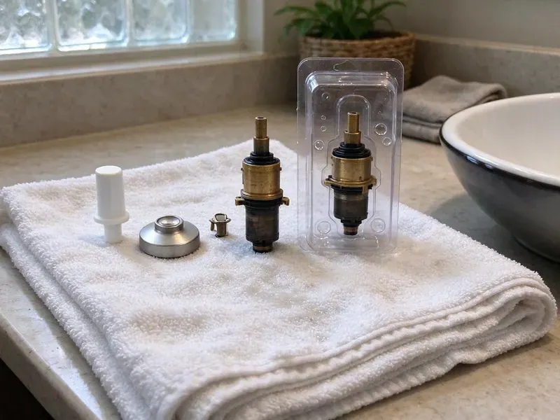
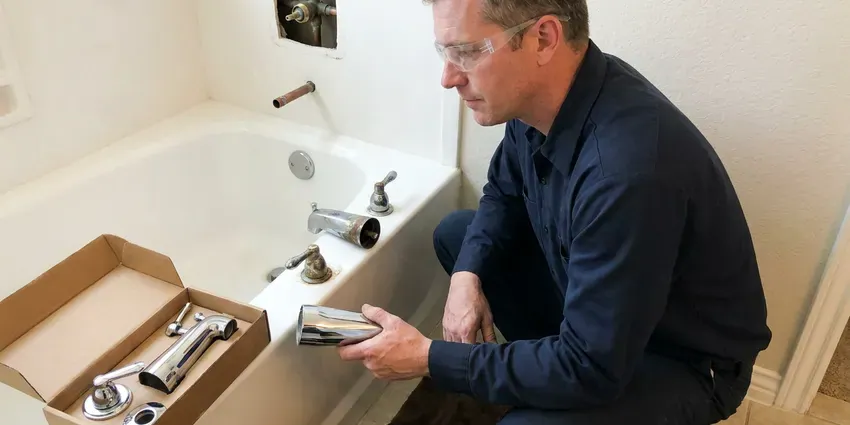

Toilet Installation in Sheboygan, WI
Upgrade your bathroom with a new toilet installed right by HKV Plumbing in Sheboygan, WI. We handle all types of toilet setups.
- Fast Scheduling for Installs
- Code Compliant Work
- Licensed, Insured Plumbers
- New Flange and Seal Included
Get a New Toilet Installed Level and Leak-Free in Sheboygan, WI.
Get your new toilet installed correctly the first time by HKV Plumbing plumbers this week.
Expert Toilet Installation Services in Sheboygan, WI
At HKV Plumbing, we understand the importance of a correctly installed toilet for your Sheboygan, WI home's comfort and hygiene. We work with all major brands and styles, providing expert advice on choosing the right toilet for your specific needs, including water-saving models.
Our expertise includes:
- Rough-in and flange replacement for new installations
- Wall-hung carrier and in-wall tank system installation
- Low-flow and high-efficiency toilet upgrades

Additional Bathroom Plumbing Services in Sheboygan, WI
From toilets to showers, our bathroom plumbing team in Sheboygan, WI handles repairs, installs, and upgrades with tidy, code-compliant work.


Customers
Why Choose HKV Plumbing for Toilet Installation in Sheboygan, WI?
Our expertise means your new toilet is installed correctly the first time, preventing common issues like slow filling or incomplete flushing. We verify all connections and test for full performance before we leave.
- Full Testing, We run multiple flushes and check every connection for drips before we go.
- Code Compliance, We make sure all toilet installations meet Sheboygan and Wisconsin plumbing codes, including correct venting and drainage requirements.
- Right Tools, Using professional tools, we ensure a tight, secure fit for all toilet components, preventing future leaks.
Citywide Coverage
HKV Plumbing proudly serves every neighborhood in Sheboygan, providing reliable toilet installation services wherever you are. From older districts to the newest developments, our plumbers are familiar with the varied housing types and plumbing setups across the area.
Experienced Team
Our plumbing team brings years of focused experience to every toilet installation project. They are trained in the latest techniques and familiar with all major toilet brands and models, delivering a high-quality job every time.
Safety-First Approach
We anchor flanges securely to slab or subfloor and use corrosion-resistant bolts. When a bidet seat needs power, we make sure a GFCI-protected outlet is in place or coordinate with your electrician.
Trusted Certified Sheboygan Plumbing Services Professionals
At HKV Plumbing, we take pride in providing licensed, certified plumbing services throughout Sheboygan, WI. Backed by recognized industry credentials, our experienced plumbers combine technical skill with genuine customer care. Whether it is repair, installation, or maintenance, we follow strict safety and quality standards to deliver long-lasting results you can trust.
Call Us Now PHCC Plumbing Contractor Recognition
PHCC Plumbing Contractor Recognition Better Business Bureau (BBB) Accreditation
Better Business Bureau (BBB) Accreditation Angi Certified Pro
Angi Certified Pro ISO 9001 Quality Management Certification
ISO 9001 Quality Management CertificationQuality Toilet Installation Services in Sheboygan, WI
Brands We Install in Sheboygan
Our team is familiar with installing all major toilet brands, including Kohler, Toto, American Standard, Delta, and Gerber. We understand the specific installation requirements for each manufacturer's models, ensuring proper function and warranty compliance. Whatever brand you've chosen for your Sheboygan, WI home, you can trust us to install it with precision and care.

High-Efficiency Toilet Installation in Sheboygan, WI
Upgrade to a high-efficiency toilet (HET) to save water and lower your utility bills, a smart investment for any home. We install many HET models, including dual-flush and low-flow options, making sure they meet EPA WaterSense criteria. Our plumbers ensure strong flushing performance while maximizing water savings for your Sheboygan residence.
Comfort-Height and ADA Toilet Installation in Sheboygan
Comfort-height toilets put the seat at about 17 to 19 inches, which is gentler on knees and backs. For accessible bathrooms, we follow ADA guidelines for seat height, centerline distance from the side wall and grab bar clearance. We can install elongated bowls and add blocking for grab bars while the wall is open. These upgrades are popular with homeowners planning to age in place.
Wall-Mounted Toilet Installation in Sheboygan
Wall-mounted toilets offer a modern look and can free up floor space, but their installation is more involved, involving in-wall carriers and concealed tanks. Our skilled technicians have the expertise to properly install these specialized units, ensuring structural integrity and leak-free operation. We manage the intricate plumbing connections within the wall for a seamless look in your Sheboygan bathroom.
Bathroom Remodel Toilet Installation in Sheboygan, WI
Remodels often raise the floor with new tile, which can leave the old flange too low. We use flange extenders or replace the flange so the seal compresses properly. If you are moving the toilet, we can relocate the drain, which on a slab foundation requires cutting and patching concrete. We coordinate timing so the toilet goes in after tile and grout have cured.
ADA-Compliant Toilet Installation in Sheboygan
For accessibility needs, we offer expert installation of ADA-compliant toilets, which are typically taller and easier to use for people with mobility challenges. These installations often require specific rough-in measurements and careful placement. We make sure your new ADA toilet is firmly installed and meets all accessibility standards for comfort and safety in your Sheboygan home.
Smart Toilet Installation in Sheboygan, WI
Smart toilets come with advanced features like bidet functions, heated seats, and automatic flushing. Installing these often involves electrical connections in addition to standard plumbing. Our technicians are trained to integrate these systems properly and correctly, ensuring all features operate as intended. We handle the detailed wiring and water connections to bring modern convenience to your Sheboygan bathroom.

Pressure-Assisted Toilet Installation in Sheboygan
Pressure-assisted toilets provide a strong flush, ideal for commercial settings or homes with specific needs. Their installation differs from gravity-fed models, requiring careful attention to the pressure tank and water supply. We make sure all components are correctly fitted and calibrated for best performance. Our plumbers in Sheboygan, WI are skilled in setting up these robust systems to prevent water hammer or excessive noise.
Toilet Installation Near Me in Sheboygan, WI
If you're searching for 'toilet installation near me' in Sheboygan, WI, HKV Plumbing is your local, trusted choice. Our plumbers are familiar with the specific plumbing requirements and common issues found in homes across the Sheboygan area. We pride ourselves on fast response times and reliable service.
Living in Sheboygan, you need plumbing services that are both reliable and accessible. HKV Plumbing is committed to providing top-tier toilet installation services right in your neighborhood. We make sure your new toilet is installed to the highest standards, offering peace of mind for years to come.
HKV Plumbing at a Glance
- Fully licensed plumbing team covering Sheboygan, WI
- 24/7 emergency service with same-day scheduling
- Upfront, flat-rate pricing before work begins
- 4.8-star rated by 448+ Wisconsin customers
Sheboygan Map
Sheboygan Information
- Population
- 49,686
- Area codes
- 920/414/262
- Service area
- Sheboygan and communities within 40 miles
- Nearby
- Oshkosh, Milwaukee, Wauwatosa, Appleton
Boilers, furnaces and water heaters work hard through the winter, so seasonal maintenance helps prevent failures during deep cold. Proper toilet installation matters in Sheboygan, WI homes, because a poorly sealed toilet can lead to leaks and mold that are costly to fix.
Expert Services
Trust our professionals for reliable HKV Plumbing solutions in Sheboygan, WI.
Our Specialized Plumbing Services in Sheboygan, WI
At HKV Plumbing, we provide a complete range of plumbing services across Sheboygan, WI. From leak detection to full system installations, our team ensures fast, precise, and affordable service for both residential and commercial properties. Explore our core services below:


How Our Toilet Installation Process Works in Sheboygan, WI
We follow a clear, step-by-step process to deliver a proper toilet installation every time in your Sheboygan, WI home.
Request a Quote
Contact us at (414) 432-4641 to discuss your toilet installation needs and schedule an on-site assessment. We'll provide a clear, upfront estimate with no hidden fees.
Old Toilet Removal
Our team will carefully shut off the water, drain and disconnect your old toilet, and remove it from your bathroom. We handle the disposal properly.
New Toilet Setup
We prepare the flange, install a new wax ring, and securely set your new toilet in place. All bolts are tightened and the tank is assembled.
Frequently Asked Questions About Toilet Installation in Sheboygan
Labor to install a customer-supplied standard toilet usually runs $200 to $400. Including a mid-range toilet, most installs total $450 to $900, while wall-hung systems with carriers range from $1,500 to $3,500 or more. We give you a flat price up front.
Yes, we have experience installing many types of toilets, including those with integrated bidet seats or smart features. These often require specific electrical connections or dedicated water lines, which our plumbers are trained to handle properly and correctly.
While DIY toilet installation is possible, hiring a professional makes sure the job is done correctly. Professionals have the tools and expertise to prevent leaks, get proper sealing, and comply with local plumbing codes, saving you potential headaches and costly repairs down the road.
HKV Plumbing stands behind our workmanship. We offer a warranty on all our toilet installations, covering labor and making sure your new toilet works as expected. Specific warranty details will be explained at the time of service.
Generally, replacing an existing toilet with a similar model in the same location in Sheboygan does not require a permit. However, if you are relocating a toilet, adding a new toilet, or making significant changes to the plumbing system, a permit may be required. We can explain local code requirements.
A one-piece toilet has the bowl and tank integrated into a single unit, offering a sleek look and simpler cleaning. A two-piece toilet has a separate bowl and tank, which are bolted together during installation. Both types are widely available and perform well.
Most standard toilet installations can be completed within 1 to 3 hours. More complex installations, such as wall-mounted or smart toilets, may take longer due to additional plumbing or electrical work.
HKV Plumbing stands behind our workmanship. We offer a warranty on all our toilet installations, covering labor and making sure your new toilet works correctly. Specific warranty details will be provided with your service agreement.
What People Are Saying About Our Plumbing Experts?

Daniel K.
A pipe burst at 11 pm and they actually answered. The plumber showed up within the hour, shut everything down, and had us back to normal the next morning. Could not ask for more.
Emergency Plumbing · Green Bay, WI
Mark T.
When our office needed drain cleaning, HKV Plumbing provided quick, reliable service. The plumber arrived on time and made sure every drain flowed perfectly before leaving. Very satisfied.
Drain Cleaning · Sheboygan, WI
Sofia M.
Two new toilets installed in one visit, no mess left behind, and the tech even adjusted a faucet he noticed was dripping. Fair pricing and really friendly.
Toilet Installation · West Allis, WILaura S.
I scheduled a water heater replacement, and the team made the process smooth and affordable. The new unit works perfectly, and they cleaned up after completing the job.
Water Heater Replacement · Wauwatosa, WI
Robert G.
The trenchless sewer replacement saved our front yard. They walked us through the camera inspection footage first so we knew exactly what we were paying for.
Sewer Line Replacement · Wauwatosa, WIJames P.
Our commercial plumbing system had a leak under the sink, and HKV Plumbing handled it professionally. The plumbers arrived quickly and restored everything without disruption to our customers.
Commercial Plumbing · West Allis, WI